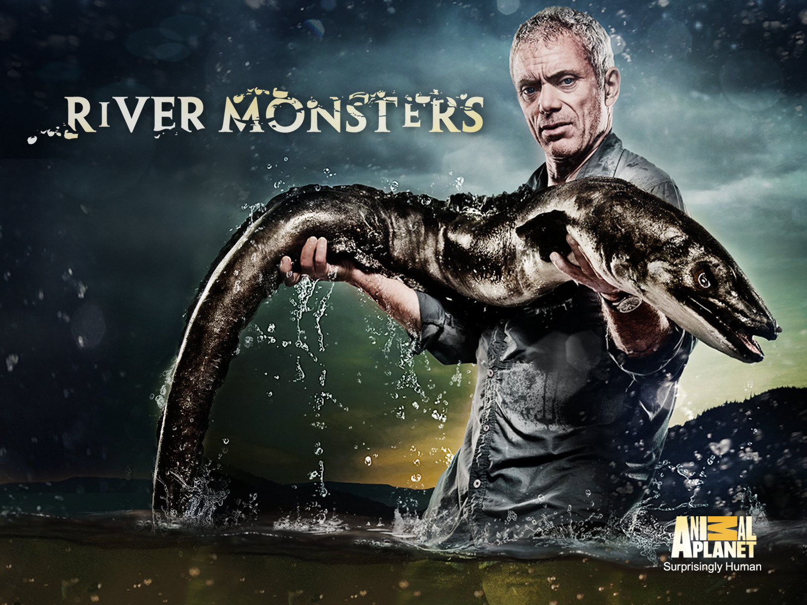
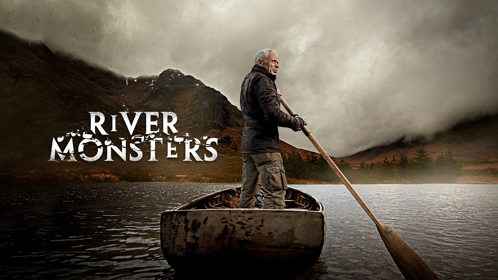
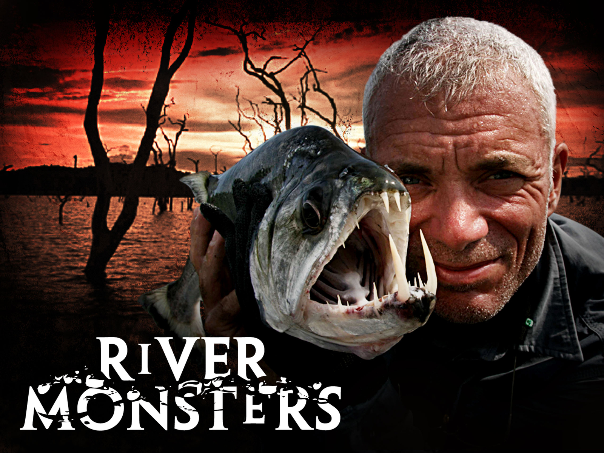
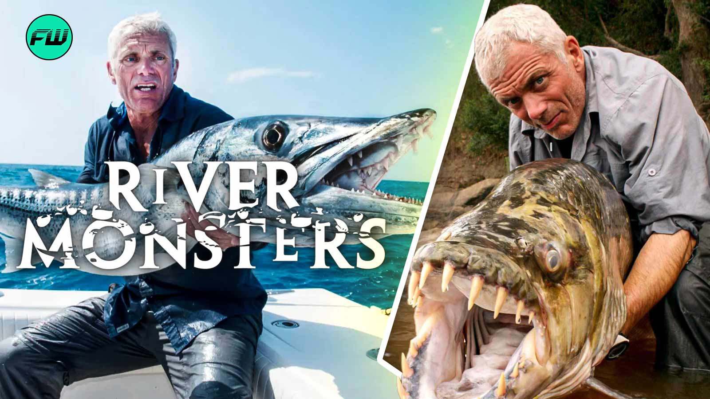
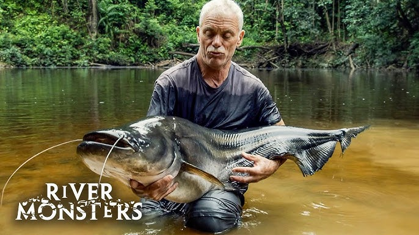

Sobre el documental
Sinopsis del documental así como varios de los lugares donde se llevo a cavo la serie y más informacion

El documental River Monsters o conocido en español como Monstruos de Río, protagonizado por Jeremy Wade, es una serie de televisión de género documental, aventura y naturaleza que sigue al biólogo y pescador mientras recorre distintos ríos del mundo en busca de criaturas acuáticas misteriosas y potencialmente peligrosas.
La trama principal gira en torno a la investigación de historias locales, mitos y supuestos ataques a humanos, que Wade analiza con un enfoque científico y exploratorio. En cada episodio, combina testimonios, datos biológicos y expediciones de pesca extrema para identificar a los verdaderos responsables detrás de estas leyendas, revelando así la realidad detrás de los llamados “monstruos de río”.

Sinopsis del documental así como varios de los lugares donde se llevo a cavo la serie y más informacion

Informacion sobre eventos especiales relacionados con el documental y varios datos curiosos de este

Lista de peces atrapados durante la duracion del programa

Lista completa de tempoaradas y episodios del documental

Formulario de contacto y enlaces a redes sociales y plataformas de streaming de la serie